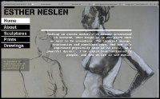
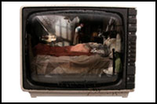
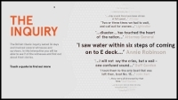

Anne Kotecha
Front End Developer
Experience
I am an advanced developer with more than 10 years of professional experience.
My current focus is on Javascript, React, Redux and CSS for Front End development work.
I write clean, well structured code, have built applications with a variety of frameworks, and work well with teams large and small.
I have created websites for clients such as Agency.com, Saatchi Interactive, LG, Budweiser, The Carbon Trust, Toshiba and others. For Newangle, I created a number of interactive touchscreens for museums. Prior to this, I worked for Atticmedia for many years developing e-learning projects for the BBC, Institute of Physics, Harper Collins and others.
Skills
- Javascript
- HTML5
- CSS3
- React
- Redux
- ES6
- D3.js
- GSAP
- Actionscript
- Git
Contact
I am available for front-end development work in the Bristol area.
Please contact me at the following email address if you think your project could benefit from my experience:
Recent Projects and Experiments


Portfolio
Habu

www.annekotecha.co.uk/portfolio/projects/habu
Responsible for the Members section of feature-rich coworking management app, using the React and Redux frameworks. Consolidated knowledge of Javascript, ES6, CSS, Git, GraphQL and unit testing. Became familiar with functional programming concepts.
Esther Neslen
www.annekotecha.co.uk/esther_neslen/
Artist website using the Robotlegs framework
The Cure
www.annekotecha.co.uk/cure_microsite/test05/index.html
This Papervision microsite was created for The Cure as a prototype for the re-release of their Disintegration album.
Budweiser
www.annekotecha.co.uk/budrising/index.html
This microsite was commissioned by Budweiser to publicise their Marlay Park music festival taking place in August 2007. As well as building the framework, I coded video and audio functionality, made extensive use of Fusekit for programmatic animation and used web services to communicate with the Budweiser backend. This project ran to a very short timescale however I was able to create a solid maintainable site which is still in use and has been updated by other developers since.
BBC Tweenies 'Goal!' game
http://www.annekotecha.co.uk/portfolio/projects/scream_out_loud/tweenies/goal_0.19.html
I created this Tweenies football game for Scream Out Loud, to coincide with the World Cup.
BBC Jam - Music 7-11
At Atticmedia, I was one of the main developers on this BBC Digital Curriculum 7-11 Music project. It took 10 months to develop and was intended to be launched as part of the BBC Jam series. I worked within a strict AS2 framework and become very familiar with the BBC DC custom component set.
Seacity Museum
www.newangle.co.uk/#!viewProject&projectID=118
Created 2 touchscreen applications for Seacity Museum, Southampton. One with sophisticated scrolling navigation the other using page flip interaction.
Florence Nightingale Museum
www.newangle.co.uk/#!viewProject&projectID=134
I created a touchscreen application for the Florence Nightingale Museum, London.
Institute of Physics CDS 1-5
I was the main developer on this year long project for the Institute of Physics. The task was to create a set of 5 interactive cds to educate trainee Physics teachers. I created a generic Actionscript framework that could be used across all 5 cds, with each cd loading in its relevant xml, swf and jpg content. The Flash framework was loaded into a Director shell which was responsible for writing and reading the users preferences, stored as xml documents, from the users hard drive.